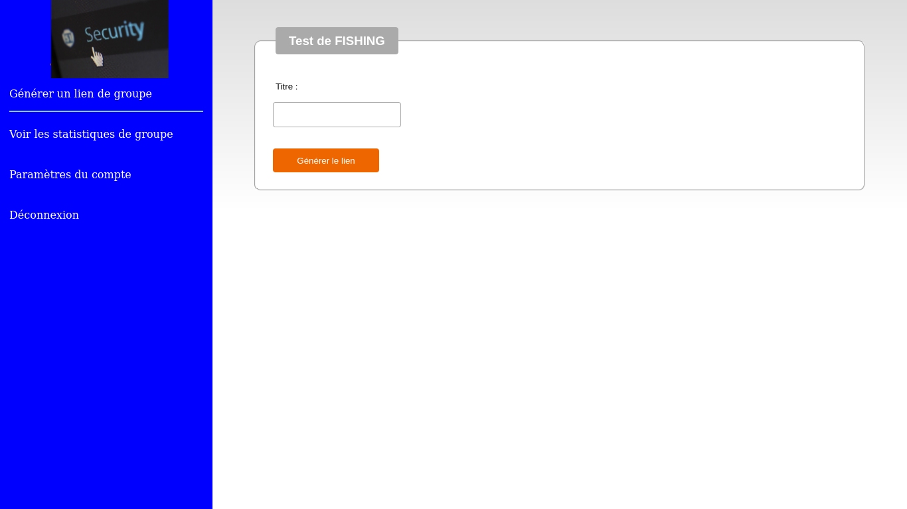
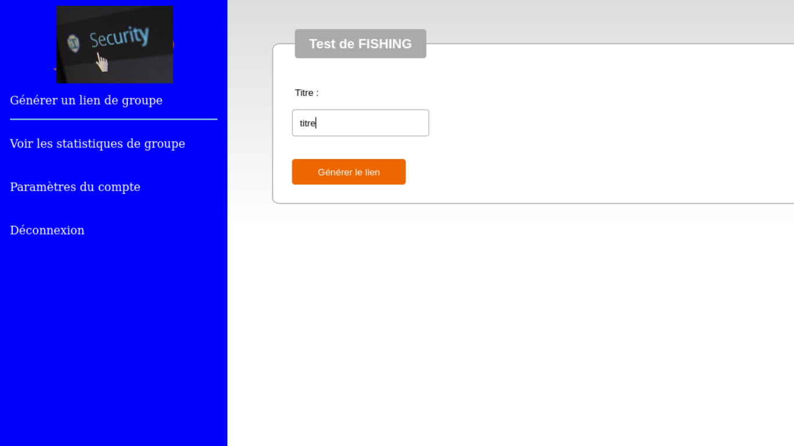
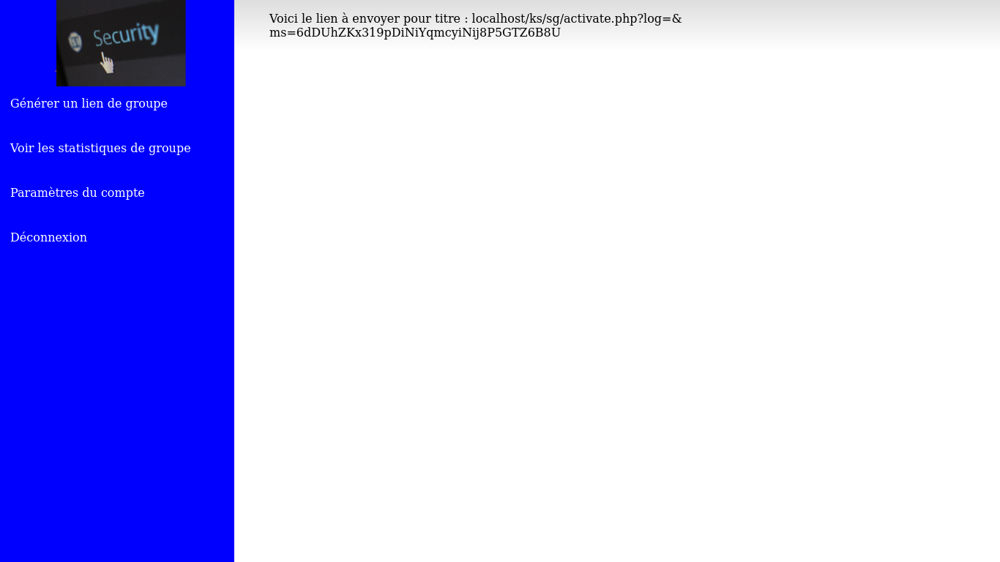
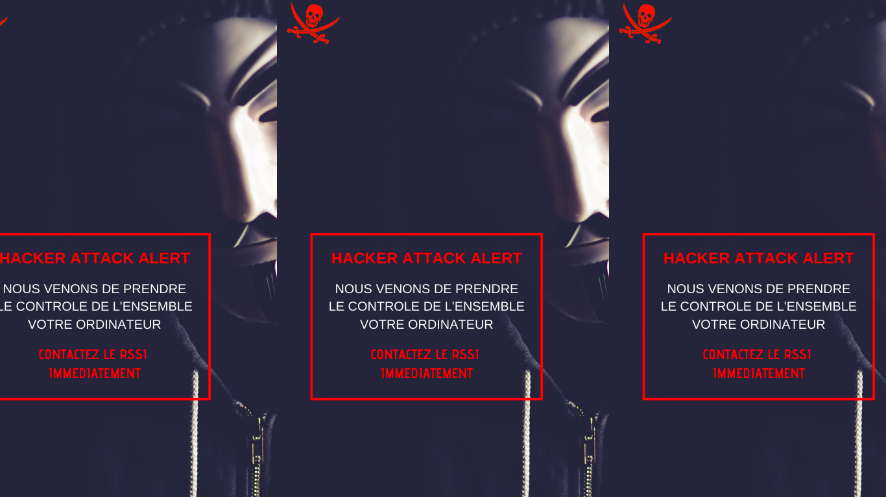
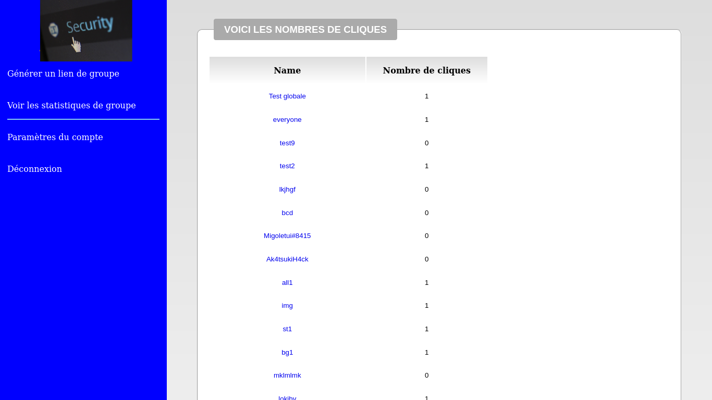
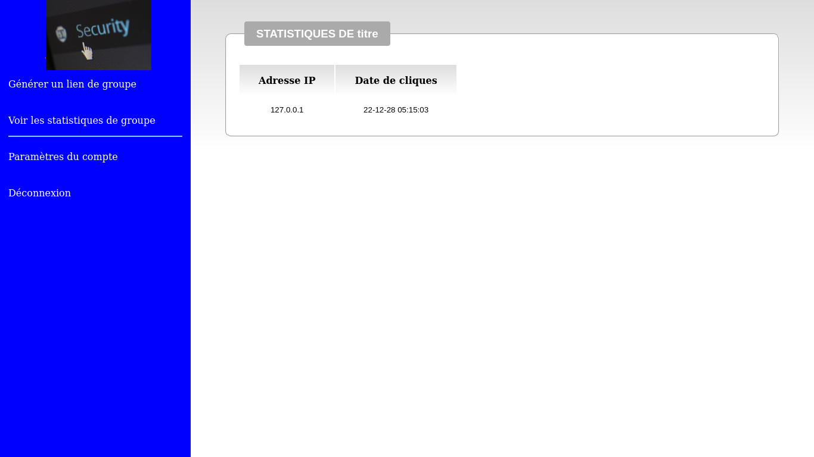

Le phishing est une technique d'arnaque qui vise à tromper l'internaute en se faisant passer pour une entité de confiance. Son objectif principal est d'obtenir accès à ses données personnelles en le poussant à cliquer sur un lien ou une pièce jointe présente dans un courrier électronique.
* Tester la vigileance des membres de l’entreprise
* Générer un lien soit-disant “malveillant” et l’envoyer dans la messagerie
* Afficher un message à l’utilisateur qui a cliqué sur le lien soit-disant “qu’il s’est fait hacker”, pour lui faire prendre consience du risque qu’il vient de prendre
* Récupérer dèrriere sur la plateforme des informations concernant l’utilsateur qui a cliqué (l’adresse IP de sa machine et le moment du clic)
Voici quelques captures d’ecran faites lors de l’utilisation de la plateforme.
Attention: Je vais masquer le logo de l’entreprise pour laquelle j’avais developpé cette plateforme.

Apres que l’administrateur se soit connecté, il vient au niveau du dashbord de la plateforme, sur lequel il y a differents boutons qui mènent vers differentes pages.

Avant de générer le lien, l’utilisateur entre un titre au cas où il voudrait en générer plusieurs. De ce facon avec le titre, il arrive a se retrouver dans les differents lien qui sont générés.

Voici le lien ainsi généré et prêt a être envoyer dans des boites mail ou tout canal de messagerie.
Au moment où un utilisateur clique sur un lien, le but est de lui faire prendre conscience du risque qu’il vient de prendre.
Cette image ci-dessous s’affiche donc sur son ordinateur en plein ecran.

Dans la partie “Voir les statistiques de groupe” de la plateforme, il est répertorié les differents liens générés (représentés par leur titre) et le nombre de clique pour chacun d’eux.

Lorsqu’un clique sera fait sur “titre”, le lien qu’on a généré tout a l’heure, on voit l’adresse ip et le moment du clic
